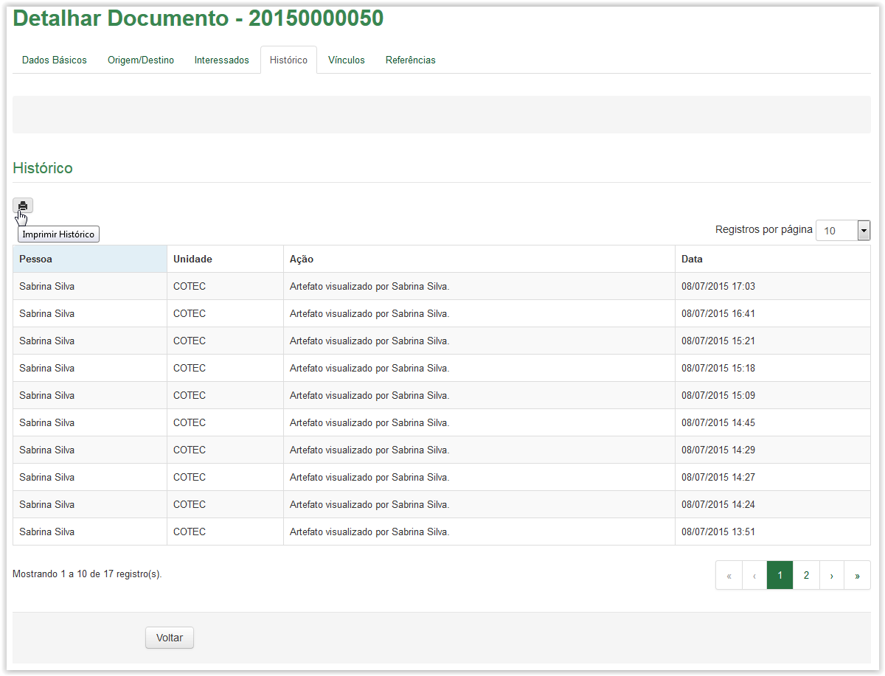
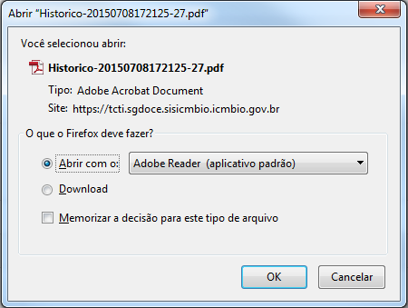
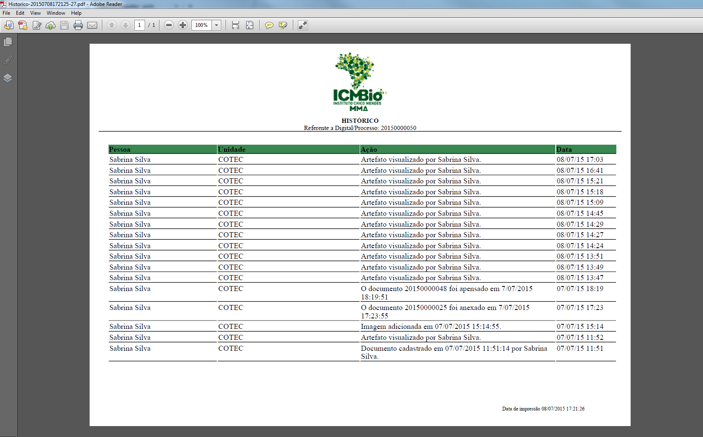

Detalhar artefatos
Para imprimir o histórico do documento, clique no ícone disponível na aba Histórico da tela Detalhar Documento (Verifique como acessar a tela Detalhar):

Tela Detalhar Documento - aba Histórico: Ícone de impressão do histórico
Após clicar no ícone o sistema apresenta a tela abaixo. Para imprimir o Histórico do Documento clique no botão  , caso contrário, clique no botão
, caso contrário, clique no botão  :
:

Solicitação para apresentação ou download do Histórico do Documento em formato "PDF"
Ao clicar no botão o Histórico do Documento, em formato “PDF”, é apresentada:

Histórico do Documento
O Histórico do Documento apresenta no cabeçalho o logotipo do ICMBio, o título e o número da Digital ao qual se refere. Logo após, são apresentadas colunas com as seguintes informações: Pessoa, Unidade, Ação e Data. No rodapé é apresentado ainda a data e hora da impressão. Se desejar, o Histórico do Documento poderá ser impresso.
Created with the Personal Edition of HelpNDoc: Free help authoring tool